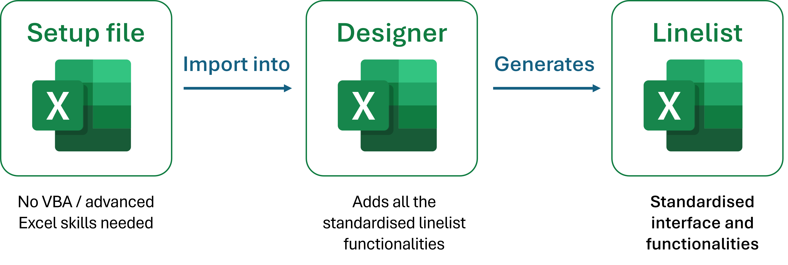

What you need to know
Introduction
Linelists
There are many excel linelists around, a lot of them are bad and generate data of terrible quality. The good ones are all different, and it is still often hard to gather data from different places. OubreakTools aims at providing robust, standardised linelists, with a system to send, centralise and visualise data.
In order to run its projects, MSF and other organisations rely on patient level data during outbreak response. It is often recorded in several files (register, patient file, case investigation form, etc.) but some of it is usually gathered in so-called linelists files. These files are used by epidemiologists to describe outbreaks, but also by the medical team and HQ to monitor activities at a local or higher level. Good quality patient data can be further analysed to provide additional information such as risk factors, or pluged in models for forecasting.
Linelists are, in essence, flat tables where one line represent one patient, and one column represents one variable for this patient. As such, linelists can be created in many software. Excel, while not the only available tool, has been massively used to collect linelist data across the world.
Advantages of using Excel to build linelists
- It is easy to create a table in Excel to collect data: most people can do it
- It is easy to further customise (adding variables, changing labels etc.), making the file adaptable
- It is easy to deploy because everybody knows a bit of Excel, minimal training is necessary
- You can have some descriptive analyses within the file, which helps user have direct information on site
- Excel is accessible offline, which is practical in places where internet access is limited
- You can share the file with partners such as the MoH if needed
In short, pretty much everybody can make a linelist if they need to, and many people do.
Drawbacks of using Excel to build linelists
Of course, Excel linelists have their drawbacks too:
- Developing a good linelist that fosters data quality takes much more time than just setting up a table, and not everybody knows the Excel functionalities to do so. The consequence of that is that there are a lot of terrible linelists around
- Files for different diseases usually differ a lot. They may have been developped by different people with different skills. Perhaps the developper used a common template at the start and re-used code, but usually the file diverge. Bringing the same functionalities to all of them takes time and effort
- Consequently, maintenance of the files is time consuming. Using VBA scripts to easily get data in and out of your linelist helps, but does not solve all the problems.
- The files can get heavy and finicky when they get too complicated
- Data protection is not as good as dedicated clinical software such as RedCap
- Excel files are not centralised by default: each site has its own data. Even if the linelist template is the same, it takes manual actions to gather the data and centralise it
An ecosystem of files
As a result, there is a whole ecosystem of files used in and outside MSF, with different interfaces, dictionaries, functionalities, languages. The data is fragmented, hard to reconcile and often of bad quality. This makes it is hard to have visibility on MSF activities and to exploit the data.
To alleviate some of the above problems, MSF OCs try to provide linelists on which disease referents and epidemiologists agreed upon, to standardise data collection within OC. The quality and functionalities included tend to depend on both OC and disease.
Better, for some diseases, OCs reached an agreement on a minimal dictionary and sometimes a common tool. Epicentre has provided a number of these “intersection” linelists in the recent years. These files however also suffered from some problems: they were hard to maintain and had different functionalities and interfaces depending on diseases.
Epicentre tried to go a step further, capitalising on what was learned developing and maintaining these tools, and developed OutbreakTools a set of tools to improve data collection, quality and visualisation. A good part of OutbreakTools is to help generating good quality, robust linelists.
Presentation of OutbreakTools
Concept
The main idea of OutbreakTools linelist generation is to separate the content of the linelist (which variables and analyses are in the linelist) from the file interface and functionalities.1
1 An idea that is not novel, as separating content and presentation (or style) is a classic idea, that you find in HTML/CSS, Markdown, Latex or even Word styles.
2 You can think of the setup file as a recipe for a given linelist.
3 If you think of the setup file as a recipe, the designer is the food processor.
The content is described in a setup file, a special Excel file that allows describing all the variables and the analyses that should go in the linelist.2 Another Excel file, the designer, reads the setup file and runs scripts to generate a linelist. The designer creates the whole linelist structure, adds the buttons and many functionalities.3

The module 2 teaches you how to modify a setup file and compile a linelist
The advantages of this approach are:
Someone with no knowledge of VBA can use the OBT tools to build or modify a linelist, as long as they know how to fill a setup file.
The maintenance of functionalities is done by a specialist in Epicentre, who generates new versions of the designer. Upon update of the designer, linelists can be regenerated in a couple of minutes to incorporate the updates.4
4 Which is not an instantaneous process, but infinitely faster than manually porting code and fixes from one linelist to a different one with lots of code adaptation, and then migrating data, with more or less hasle depending on the linelist.
OutbreakTools Workflow
In addition to linelist development, OBT contains tools that rely on the standardised nature of the linelists to build data cleaning workflows and dashboards much faster than ever before. When a new linelist is created, a simple functional dashboard can be build in less than a couple of days, including automatic data gathering from a mail address and compilation.
The full workflow allows epidemiologists or data teams to send their data to Epicentre for it to be displayed on a dashboard. The data will usually be displayed between one or two hours after being sent.
OutbreakTools linelists
OBT linelist contain what you may have come to expect from mature linelists: places to enter data and metadata, a couple of analyses, and ways to deal with languages and places.
Interface
They always have the same functionalities, which include:
- Possibility to upload pre-formatted geobases to standardise geographical information
- Basic analyses (uni and bivariate tables, epicurves, top x locations with the most cases etc.)
- Data and analyses export (anonymous or not)
- Possibility to show or hide optional variables
- Possibility to migrate data to a newer version of the linelist
- …
Most of the important features of the linelist can be accessed through the OutbreakTools Menu at the top of Excel interface.
Structure of the file
At minima, an OutbreakTools linelist contains these sheets:
An Info sheet which contains metadata about the project
At least one data entry sheet to enter patient data
Some or all of the following analyses sheets containing basic exploration of data:
- Uni and bivariate analyses
- Temporal analyses (epicurves and their associated tables)
- Spatial analyses (top X locations of cases)
- Spatio-temporal analyses (epicurves for chosen locations)
A Custom dropdown sheet where the user can define categories for some specific variables
A Custom tables sheet where the user can create a pivot table of the data
A Geo sheet showing the loaded geobase.
Languages
OBT linelists usually exist in several languages. In that case there is one file per language (by opposition to a button to switch language within one linelist).
You can enter several languages in a given setup file, and chose in the designer which of these languages to generate a linelist in. The generated files have the same interface and dictionary, and differ only in the interface and label languages (variable names are the same).
Because the translations of all labels and categories are available in the setup file, the compilation scripts can automatically translate the data received in different languages to English, to gather all the data in the dashboard.
Geographic data
Describing geographic data is a huge challenge for patient data (independently of the software used). It is generally hard to access geographic levels to describe places in all the countries that we work in: the data may change over time, is often incomplete, and sometimes several sources of data contradict each others.
In OBT linelists, as in many linelists developed before, we made the arbitrary choice to describe geographic locations with four hierarchical administrative levels. Each location is thus associated with four columns containing cascading dropdown menus (as well as several hidden derived columns).
The categories with which to populate dropdown menus are country specific. A member of the EpiDS team is tasked to gather geographic data from different places (GIS unit, OCHA HDX, local GIS officers etc.) and create database of geographic locations associated with shapefiles (files to plot geographic data). As a part of OutbreakTools, we provide Excel tabulated versions of this data, the so-called geobases, which can be imported very easily in OBT linelists to fill the dropdown menus for locations. These geobases are accessible online in the Geoapp.
Outbreaktool Dashboards
Epicentre maintains a couple of OBT dashboards associated with the OBT linelist5.
5 Most of these dashboards will be merged into one at some point.
All the OBT linelist produced by the EpiDS team have a button to export data to the dashboard. This creates a protected file with the data and metadata that you can send to a dedicated mail address (Figure 1).
More explanations can be found here
Preparing a linelist for deployment
Deploying usually involves the following steps:
- Download an empty linelist template, and the accompanying documentation
Go to the Epinetwork Sharepoint or ask a referent epi/disease focal point^6.
6 Unless you already have a recent version
There may be several languages available. In general you can expect English and French as default for well established linelists. Spanish, Portuguese or Arabic translations may be developed when needed for some diseases, don’t hesitate to ask.
Get a geobase for your area from the Geoapp
Fill the linelist metadata: section, country etc.7
Customise the linelist:
- Select the optional variables you want to show or hide
- Define the start of the week for your country
- Import the geobase in the linelist
- Customise some dropdown menus
- Tweak columns width
- Tweak graphs
Optional: prepare and print a register and/or a Case Report Form to enter data on paper
Send the linelist to the sites with the documentation. In many settings there should be one linelist per site.
Ask the site to fill the remaining metadata from the Info sheet (site, sometimes site location etc.)
7 It is very important to fill the country, name of the facility and section, as these are used to name exports.